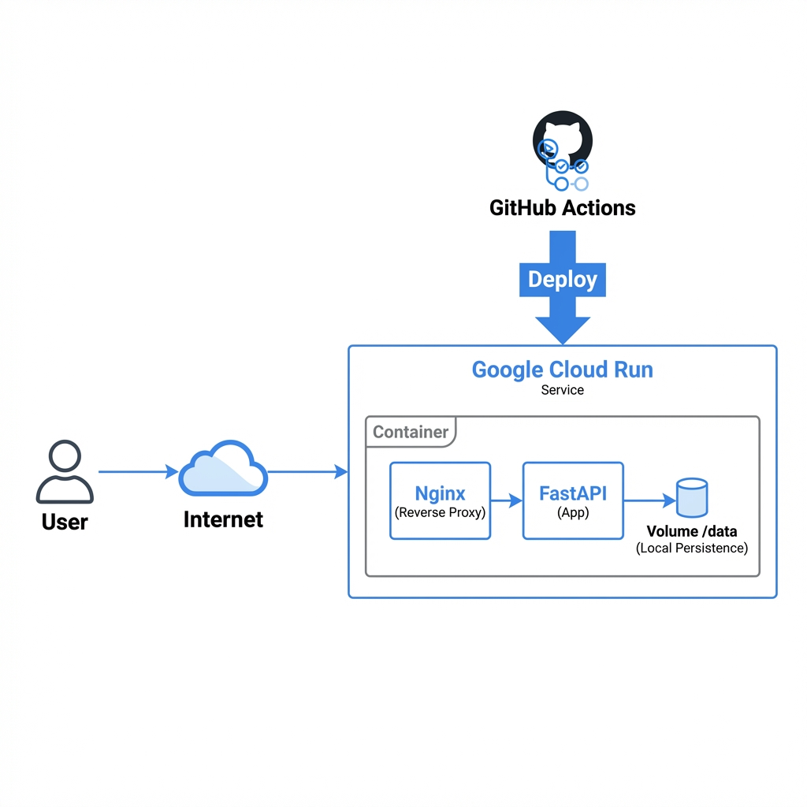

Relatório Técnico
Projeto Integrador: Docker e Nuvem
Residência em TIC 20
Janeiro, 2026
1. Descrição da Aplicação
A aplicação consiste em um portfólio institucional web integrado a uma API de monitoramento.
- Frontend: Aplicação SPA (Single Page Application) estática, desenvolvida com HTML5, CSS3 (efeitos de glassmorphism) e JavaScript Vanilla.
- Backend: API REST desenvolvida em Python com FastAPI, responsável por fornecer dados de saúde do sistema (health check) e métricas de uso (uptime, contador de visitas persistente).
- Servidor Web: Nginx, atuando como servidor de arquivos estáticos e Proxy Reverso para a API, tudo encapsulado em um único container.
2. Modelo de Serviço Escolhido: PaaS
Optamos por utilizar o Google Cloud Run, um serviço de PaaS (Platform as a Service) gerenciado "Serverless" para containers.
Justificativa
O modelo PaaS foi escolhido pois abstrai a complexidade de gerenciamento do Sistema Operacional e do Hardware subjacente, permitindo focar exclusivamente no código e no container da aplicação.
Benefícios
- Automação: O Google gerencia a infraestrutura, atualizações de segurança do host e provisionamento de recursos.
- Custo-Benefício: Modelo "Pay-as-you-go" (pague pelo uso). Se ninguém acessa o site, o custo tende a zero.
- Simplicidade Operacional: Deploy simplificado através de uma única imagem Docker.
Desafios
- Cold Starts: Como o serviço pode escalar a zero, a primeira requisição após inatividade pode levar alguns segundos a mais.
- Estado (Statelessness): Containers no Cloud Run são efêmeros.
- Implementamos uma funcionalidade de "Registrar Visita" que grava em um arquivo JSON local (
/data/visitas.json) para demonstrar o uso de volumes.
- Importante: Em produção no Cloud Run, esse arquivo é temporário. Isso prova o conceito de Statelessness.
3. Arquitetura e Conceitos Aplicados

Figura 1: Arquitetura Simplificada da Solução no Google Cloud Run
3.1 Docker e Containerização
Utilizamos um Dockerfile que prepara uma imagem híbrida baseada em python:3.11-slim, instalando o nginx sobre ela. Isso permite que um único artefato de deploy contenha tanto a lógica de apresentação quanto a de negócio.
3.2 Escalabilidade e Elasticidade
O Cloud Run oferece Elasticidade Automática.
- Se o tráfego aumentar repentinamente, a plataforma provisiona novas instâncias (Scale Out).
- Quando o tráfego diminui, as instâncias são desligadas (Scale In).
3.3 Responsabilidade Compartilhada
- Provedor (Google): Responsável pela segurança física, rede e host.
- Cliente (Nós): Responsável pela segurança da aplicação (código) e configuração do container.
4. Estratégia de Deploy (CI/CD)
Implementamos uma esteira de Integração e Entrega Contínuas (CI/CD) utilizando GitHub Actions.
Fluxo Automatizado
- Trigger: Commit na branch
main.
- Build: O GitHub Actions constrói a imagem Docker.
- Push: A imagem é enviada para o Google Artifact Registry.
- Deploy: O deploy é realizado automaticamente no Cloud Run.
5. Melhorias Avançadas Implementadas
5.1 Observabilidade e Monitoramento
- Logs em Tempo Real: Endpoint
/api/logs para visualização remota.
- Health Check Avançado: Verificação de latência e escrita em disco.
- Métricas e Dashboards: Gráficos em tempo real com Chart.js.
5.2 Segurança e Autenticação
- Autenticação via Token: Proteção de endpoints sensíveis.
- Backup Automático: Cron Job simulando Disaster Recovery.
5.3 UX/UI Premium
- Tema Híbrido: Dark/Light Mode.
- Micro-interações: Animações fluidas.
6. Comparativo de Modelos
| Característica |
IaaS (AWS EC2) |
PaaS (Cloud Run) |
SaaS (Firebase) |
| Gerenciamento |
Alto |
Médio |
Baixo |
| Escalabilidade |
Manual |
Automática |
Automática |
| Custo |
Por Instância |
Por Requisição |
Por Uso |
| Flexibilidade |
Total |
Alta |
Limitada |
7. Conclusão
O projeto demonstra com sucesso a aplicação de conceitos modernos de Cloud Computing e DevOps. Através da utilização de containers (Docker) e PaaS (Cloud Run), alcançamos uma arquitetura escalável, segura e de fácil manutenção, atendendo integralmente aos requisitos propostos.